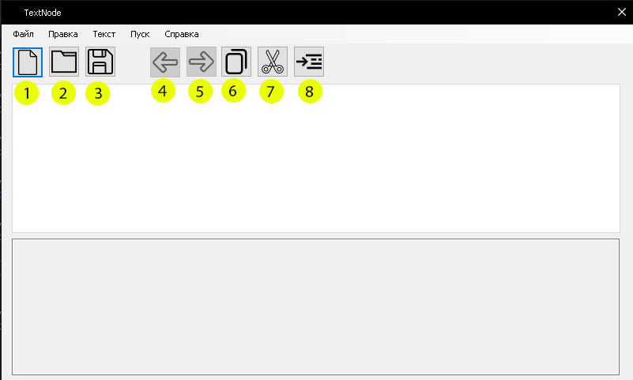

Обозначение кнопок:

Рисунок 2- Обосзначение кнопок
Рассмотрим кнопки на рисунке 2:
- 1 - Кнопка создания нового файла.
- 2 - Кнопка открытия файла.
- 3 - Кнопка сохранения файла.
- 4 - Кнопка отмены действия.
- 5 - Кнопка возврат к исходному действию.
- 6 - Кнопка копировния текста.
- 7 - Кнопка вырезания текста.
- 8 - Кнопка вставки текста